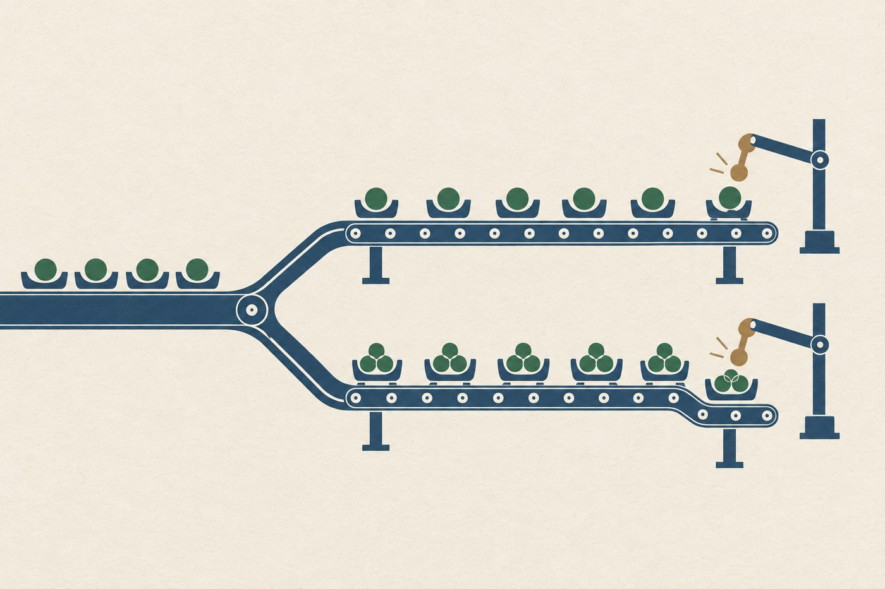
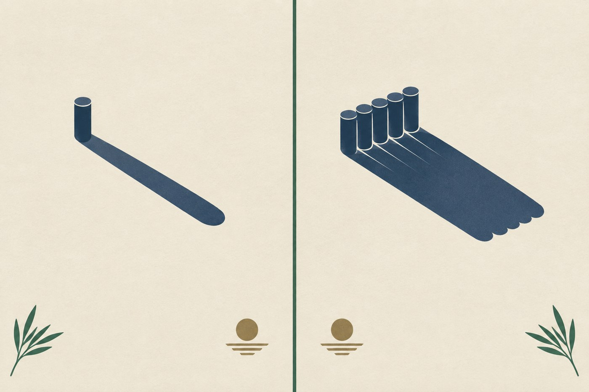
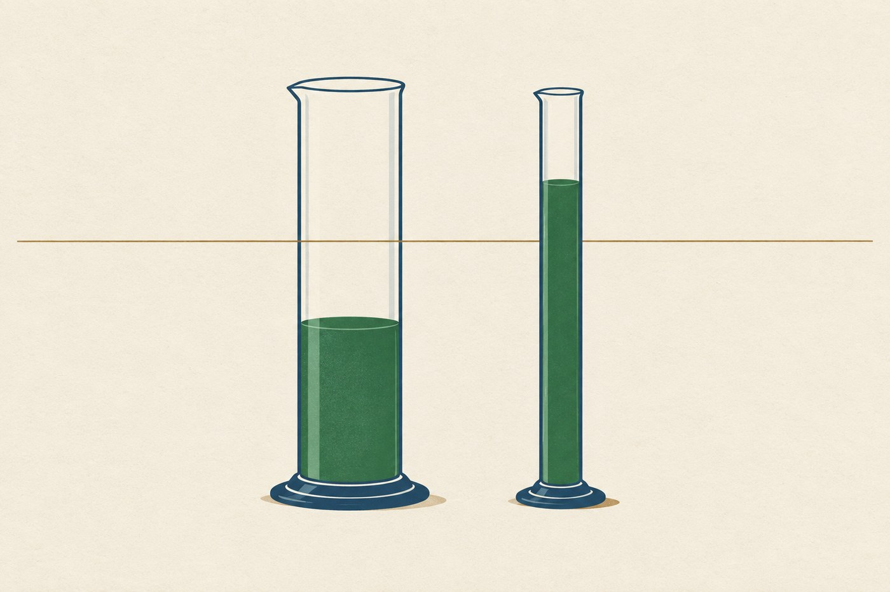
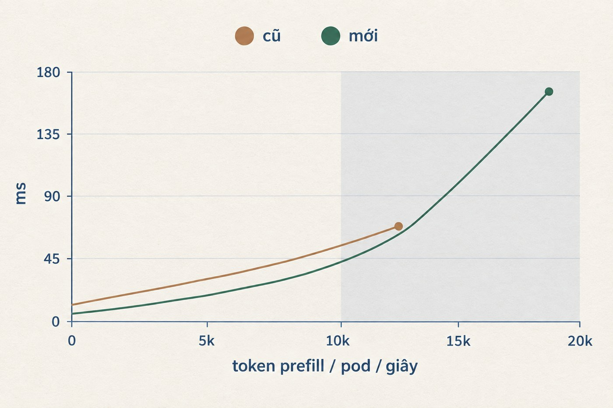

Một lần đổi engine, không đổi gì khác
misa-ai-1.1 chạy production trên cụm nội bộ và nhận khoảng một triệu request mỗi ngày. Về kỹ thuật: MoE 35 tỷ tham số, kiến trúc hybrid linear-attention, trọng số FP8. Ba đặc điểm này quyết định phần cuối bài.
Đầu tháng 9 tôi chuyển nó sang một bản SGLang mới hơn kèm cấu hình attention khác. Mọi thứ còn lại giữ nguyên: trọng số, context length, memory fraction, chunked prefill size, phần GPU được cấp. Cả hai bản đều không bật speculative decoding.
Một phép so sạch như vậy hiếm khi có được trên hệ thống đang chạy thật. Chênh lệch đo được sau đó thuộc về engine và cấu hình, không còn đường nào đổ cho phần cứng hay model.
Người dùng nhận được gì
Mỗi request đi qua hai giai đoạn, và chúng chạm vào trải nghiệm theo hai cách khác nhau.
Prefill là lúc engine đọc hết input. Người dùng ngồi chờ suốt quãng này, chưa nhận được token nào. Decode là lúc model sinh câu trả lời, mỗi lần một token. Hai giai đoạn giành nhau cùng một GPU, nên engine quyết định thẳng cả thời gian chờ ban đầu lẫn tốc độ sinh token.
Bản mới thắng ở cả hai. Prefill là chỗ nó thắng đậm.

Decode nhanh hơn ở mọi mức tải đo được, và khoảng cách nới rộng đúng lúc tải lên cao.

Ghép hai giai đoạn lại thì ra con số người dùng thực sự cảm thấy. Với response 300 token, tính theo median đo trong production, tổng thời gian từ lúc gửi request tới lúc nhận đủ câu trả lời giảm từ 2,8 xuống 1,2 giây. Quãng chờ trước token đầu tiên giảm từ 0,88 xuống 0,10 giây. Thời gian nằm trong hàng đợi lúc máy bận giảm từ 0,099 xuống 0,005 giây.
Request xong sớm thì trả GPU sớm. Cùng một pod vì vậy gánh được 194 nghìn request mỗi ngày thay vì 88 nghìn.

Ba thay đổi, không cái nào chạm vào model
Weights, tokenizer và chat template giữ nguyên. Các service gọi sang nó cũng không sửa dòng code nào.
Thứ nhất, nâng container image. Bản cũ chạy từ đầu tháng 7, bản mới ra đầu tháng 9, cách nhau khoảng hai tháng phát triển upstream.
Thứ hai, bật prefill backend dành riêng cho lớp linear-attention. Model là kiến trúc hybrid, phần lớn layer dùng linear attention. Cấu hình cũ không khai báo backend cho nhóm này nên chúng chạy bằng kernel mặc định, vốn viết cho kiểu attention khác và chậm hơn hẳn ở đây.
Thứ ba, bật nhóm sparse prefill kernel cho lớp full-attention. Kernel này sinh ra cho prompt context rất dài, và nó có một ngưỡng kích hoạt theo độ dài KV cache.
Thay đổi thứ hai mang về phần lớn mức tăng prefill. Nhìn vào cấu hình thì khó đoán ra, vì nhóm flag của thay đổi thứ ba dài gấp bảy lần nên rất dễ được ghi công nhầm.

Tốc độ đến từ đâu
Ai từng tune serving đều biết cảm giác này: bật một loạt flag, hệ thống nhanh lên thật, rồi không ai dám chắc flag nào có công.
Ở đây nhóm flag sparse prefill trông đúng như thủ phạm. Kernel viết cho prompt context rất dài, bật lên thì prefill nhanh, câu chuyện khép kín.
Trước khi ghi công, tôi đi kiểm điều kiện để kernel đó thực sự chạy. Nó chỉ chạy khi KV cache của một request vượt 95.000 token.

Sáu ngày, gần sáu triệu request, đúng 60 cái chạm ngưỡng. Sparse prefill gần như chưa bao giờ chạy, và toàn bộ mức tăng prefill thuộc về prefill backend của nhóm layer linear-attention, nhóm nằm trên đường đi của mọi request.
Chi tiết này quyết định các lần nâng cấp sau. Nếu báo cáo ghi công nhầm, sẽ có người bê nguyên bộ sparse-prefill flags sang một model full-attention rồi ngồi thắc mắc vì sao chẳng nhanh lên, đơn giản vì điều kiện kích hoạt không bao giờ xuất hiện trong workload của họ.
Ai đang serving model hybrid thì để ý đúng chỗ này: chọn cấu hình theo kiến trúc model và hình dạng workload, đừng chọn theo số lượng flag bật được.
Ba lần con số suýt nói ngược lại sự thật
Bảy lần là con số đủ lớn để chính tôi không tin. Nên tôi đi tìm cách bác bỏ nó trước khi đem đi khoe. Tìm được ba lỗi, cả ba đều nằm trong cách đo của mình.
Lần thứ nhất: đếm nhầm đơn vị
Trên một endpoint có spec decode, mỗi chunk SSE chở trung bình 2,4 token. Script đo đầu tiên đếm chunk rồi ghi thành số token, nên một response 300 token về trong 124 chunk bị ghi là 124.
Một cải tiến 2,4 lần hiện ra thành bước lùi. Sai số đi theo chiều đó thì khó bị chất vấn, vì nó khớp với định kiến rằng bản mới hay sinh regression.

Lần thứ hai: đếm nhầm số pod
Cấu hình của cả hai workload đều khai báo một replica. Thực tế bản mới chạy 5 pod, bản cũ chạy 2 pod.
Autoscaler của Kubernetes đã scale trong lúc vận hành mà không ghi ngược vào cấu hình, nên đọc file cấu hình thì không thấy gì bất thường. Cách duy nhất biết được là đếm số process đang export metric về Prometheus. Mọi con số trong bài đều đã chia theo số pod thật.

Lần thứ ba: giữ cố định nhầm biến
Câu hỏi còn lại: tải cao thì bản mới có chậm decode hơn không? Phải nhìn p99 chứ không nhìn trung vị. P99 là mốc mà 99% request nằm dưới, tức phần đuôi gồm 1% request xui nhất. Trung vị đẹp mà p99 xấu thì vẫn có người phải ngồi chờ lâu bất thường.
Tôi giữ cố định số request chạy cùng lúc trên mỗi pod rồi so ITL p99. Dải tải cao nhất ra 32,9 ms so với 180,8 ms, và tôi viết luôn câu kết luận.
Phiên bản mới đánh đổi tốc độ decode lấy latency: ITL p99 kém hơn khoảng 5,5 lần khi tải cao.
Vấn đề nằm ở biến được cố định trong phép so sánh.

Thứ quyết định độ nghẽn của decode không chỉ là số request đang decode, mà còn là lượng prefill đang chạy cùng. Bản mới nhận input dài hơn và sinh output ngắn hơn, nên ở cùng một số request song song nó đang prefill nhiều hơn khoảng 1,7 lần: 8.839 so với 5.324 token mỗi pod mỗi giây.
Phép đo ban đầu đặt hai bản vào hai mức tải khác nhau rồi lấy đó ra so latency. Tôi đã bắt bản mới làm nhiều việc hơn rồi chê nó chậm.
Xếp lại theo tốc độ prefill trên mỗi pod thì bảng lật ngược.

Cùng đợt đó, misa-ai-2.0
misa-ai-2.0 là model đa phương thức 26 tỷ tham số, và nó cũng đổi engine trong cùng đợt, từ vLLM sang sglang. Con số chắc chắn nhất ở đây là hàng đợi: thời gian một request nằm chờ tới lượt giảm từ 0,297 giây xuống 0,005 giây.
Nhưng thứ đáng kể lại ở con này là một cái bẫy thứ tư, và là cái tôi thích nhất.
Có ba workload cùng phục vụ bộ trọng số đó, và cả ba đều khai served-model-name giống hệt nhau. Nhìn vào cấu hình thì đinh ninh chúng nhận cùng một loại traffic. Thực tế mỗi con gắn một api-key riêng, nên gateway trỏ ba luồng khác hẳn nhau: input trung bình 10.159, 8.714 và 14.272 token; output trung bình 100, 427 và 366 token.
Hệ quả trực tiếp: bản mới đang gánh gấp mười lần lượng prefill của bản cũ, 1.350 so với 126 token mỗi pod mỗi giây. Đặt hai bên cạnh nhau rồi so tốc độ decode là lặp lại nguyên xi sai lầm ở lần thứ ba bên trên.
Còn TTFT của bản cũ thì không đem khoe được. 23% request của nó có kèm ảnh và gần như ảnh mới mỗi lần, nên phải encode lại từ đầu. Con số TTFT p95 4,1 giây đo trên một pod gần như rảnh phần lớn là thời gian encode ảnh chứ không phải engine chậm. sglang không export metric tương đương nên chưa có cách đối chiếu.
Cùng tên model không có nghĩa là cùng traffic. Trước khi so hai workload, kiểm luôn xem gateway đang đổ gì vào từng con.
Chốt lại
Cùng số GPU, cùng model, cùng chất lượng output. Người dùng chờ ít đi khoảng chín lần ở đoạn khó chịu nhất, hệ thống gánh gấp đôi số request. Giá phải trả là một lần đổi image kèm vài dòng cấu hình. Con misa-ai-2.0 thì gần như xoá sạch thời gian nằm hàng đợi.
Chi phí thật nằm chỗ khác: bốn ngày đo đạc và ba kết luận sai phải rút lại, cả ba hóa ra là một bài học đội ba lốt. Khi so hai hệ thống đang nhận tải khác nhau, thứ phải giữ cố định là thứ thực sự sinh ra chi phí. Và mọi bảng số phải in kèm số giờ mẫu cùng mức tải trung vị của từng dải, thiếu hai cột đó thì bảng nào nhìn cũng thuyết phục ngang nhau.
Con số đẹp thì dễ khoe. Phần khó là biết chắc nó đo đúng thứ mình tưởng.
Ghi chú
- Con số bảy lần trộn hai loại thống kê, trung bình uncached token chia cho TTFT p50, nên đọc như một bậc độ lớn hơn là một hệ số chính xác. Chiều thì chắc chắn: 0,879 giây so với 0,098 giây, trong khi input của phiên bản mới chỉ ngắn hơn 25%.
- Con số 2,8 xuống 1,2 giây cho response 300 token được tính từ TTFT p50 cộng 300 lần ITL median ở dải concurrency 1 tới 2, không phải đo trực tiếp một request cụ thể. Hai workload phục vụ client khác nhau nên độ dài response thực tế của chúng lệch nhau, không so thẳng e2e latency được.
- Các hình minh họa và bốn biểu đồ trong bài được dựng bằng gpt-image-2.5. Mọi con số in trên biểu đồ đã được đối chiếu lại với số liệu Prometheus gốc; hình dạng cột và độ dốc đường chỉ mang tính minh họa.
- Bài viết không liệt kê chi tiết flag và giá trị tuning của cấu hình serving.